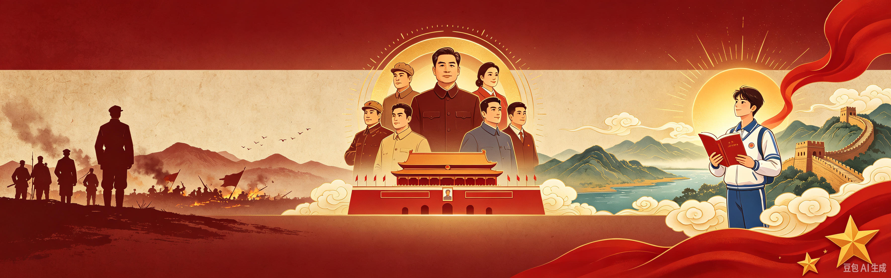
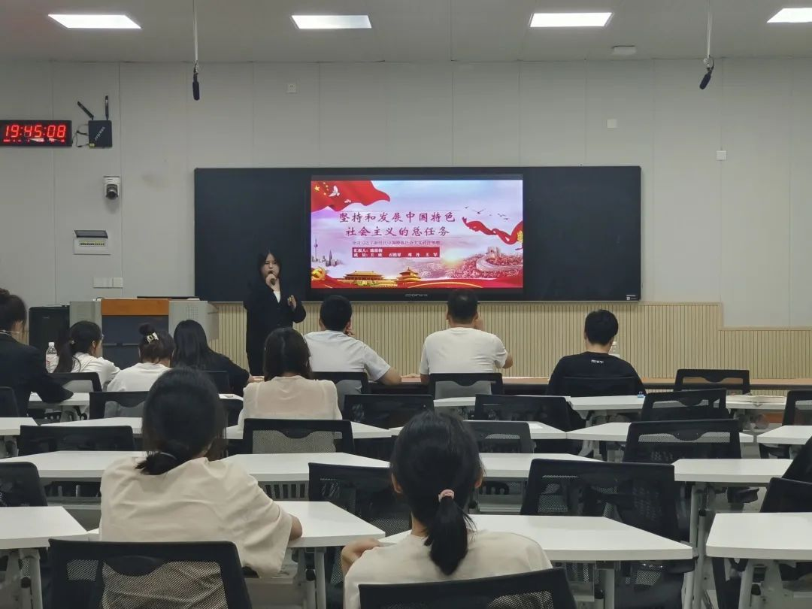
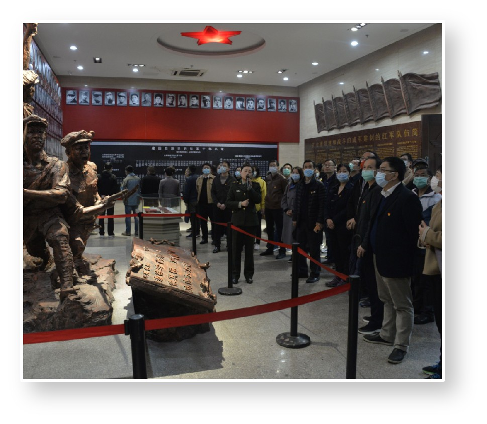

我们读懂历史故事，感悟榜样精神，懂得了爱国主义的内涵。不少同学会有疑问：爱国不只是口号，作为普通大学生，在日常学习生活里我们究竟可以怎样践行爱国精神？爱国主义体现在点滴行动当中，我们可以从课堂、校园、社会实践三个方面做起。

认真上好思政课程，主动学习党史、新中国发展史。在专业学习中树立报国理想，把个人学业成长和国家发展联系在一起，夯实思想根基。
积极参与学校主题团日、红色纪念活动、主题宣讲等校园文化活动。在仪式与集体活动当中厚植家国情感，树立民族自豪感。

利用课余时间走进红色教育基地参观学习，参加志愿服务、社会调研等实践活动。走出书本，亲身感受祖国的发展变化，把爱国想法转化为实实在在的行动。